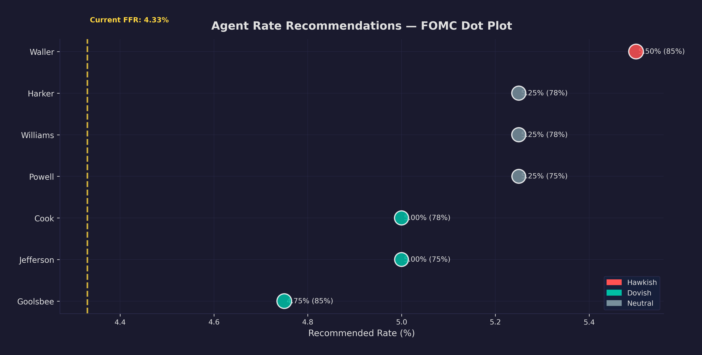
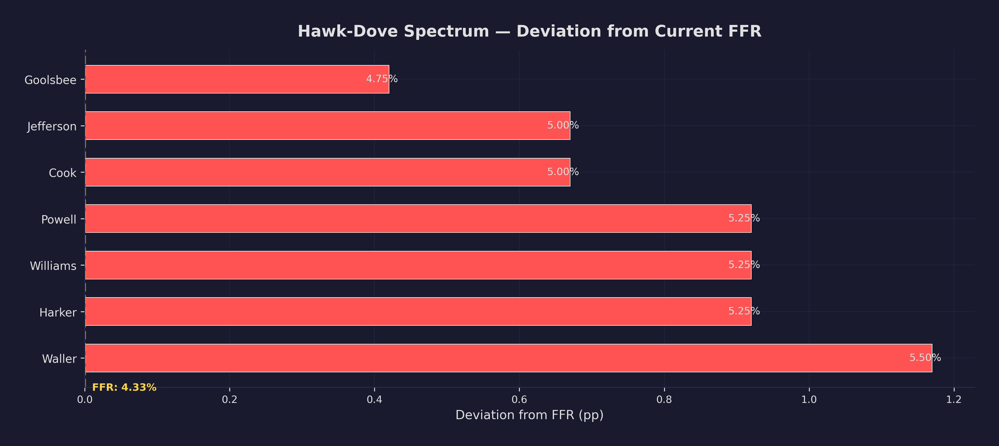
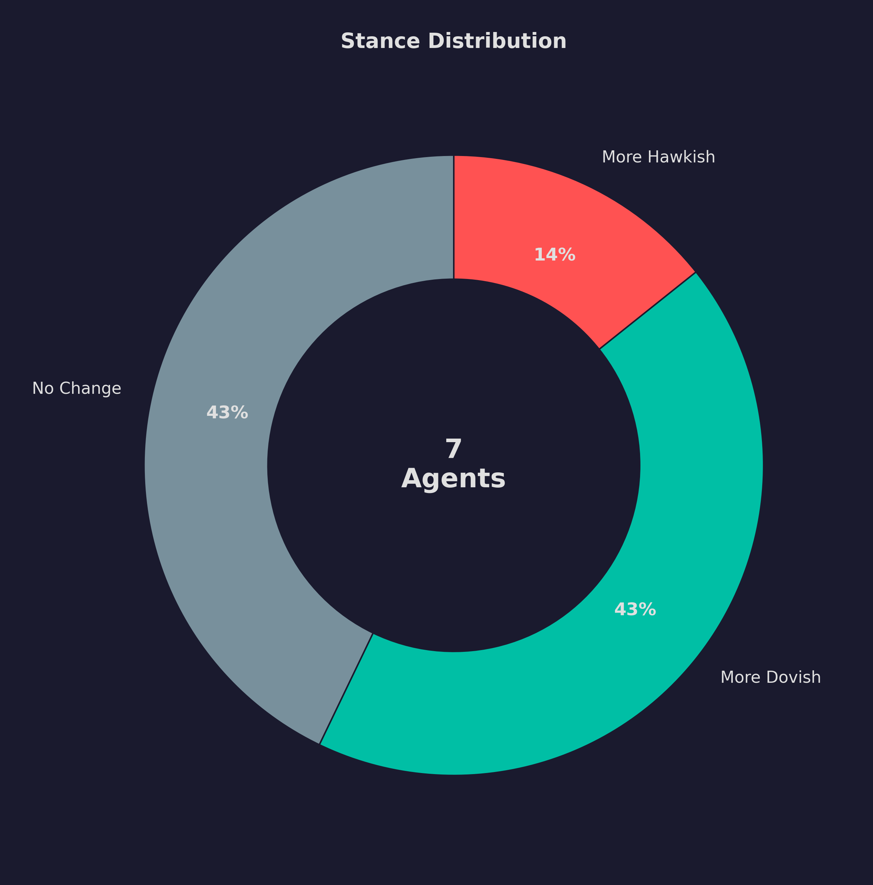

Building a Persona Factory: From Speech Data to 19 Distinct AI Personalities
A two-agent LLM pipeline that ingests real speech data, classifies policy stances, and produces versioned persona cards — with tool-augmented database access and the schema migration that fixed backtesting.
How do you create 19 distinct AI personas that behave like real people — each with their own policy philosophy, rhetorical style, and threshold for dissent? Not a chatbot wearing a name tag, but a structured system that ingests speech data, classifies stances, and produces behavioral instructions that downstream simulation agents consume.
The member service is 3,000 lines of Python, backed by PostgreSQL with Alembic migrations, and it contains the two-agent LLM pipeline that does the actual persona generation. It is the canonical source of truth for who sits on the FOMC, what they believe, and how those beliefs translate into simulation parameters.
The Composition Problem
The FOMC has a complex roster. Seven governors appointed by the president, twelve regional bank presidents, and a rotating voting schedule that changes every January. To simulate any historical meeting accurately, you need to know not just who was on the committee, but who was voting on that specific date.
async def get_voting_members(self, as_of: date):
year = as_of.year
rot = await self.session.execute(
select(VotingRotation.district)
.where(and_(VotingRotation.year == year, VotingRotation.is_voting.is_(True)))
)
rotating_districts = [r[0] for r in rot.all()]
for m in all_active:
if (m.role == "governor"
or m.role == "president" and m.district == "new_york"
or m.role == "president" and m.district in rotating_districts):
voting.append(m)
This mirrors the real FOMC rules: all governors always vote, the New York Fed president always votes (vice chair of the committee), and four of the remaining eleven presidents vote on a rotating schedule. The result is that the simulation can produce a perfectly accurate roster for any date in the database, with each agent tagged is_voting_member: true/false.
Two-Agent Pipeline
The persona factory chains two specialized agents, each built on the agent framework's OllamaChatClient.as_agent() pattern. All inference runs through Ollama — no cloud dependencies.
Agent 1: StanceAnalyzer reads a member's speech summaries and hawk-dove stance history from the database, then synthesizes a stance profile. It classifies the current position (hawkish/dovish/neutral), identifies trend direction, and extracts the policy themes they emphasize most.
Agent 2: PersonaGenerator takes that stance profile and produces a full persona card: narrative biography, policy philosophy, communication style, key concerns, stance_offset, and dissent_cost.
class PersonaFactory:
async def generate_persona(self, member_id, as_of_date):
# Step 1: Analyze stance from speech data
stance_profile = await self._run_stance_agent(member_id)
# Step 2: Generate full persona card
persona_text = await self._run_persona_agent(member_id, stance_profile)
# Step 3: Parse, derive offset, persist
persona_data = self._parse_json_response(persona_text)
if "stance_offset" not in persona_data and "prior_mu" in persona_data:
mu = float(persona_data["prior_mu"])
persona_data["stance_offset"] = round(mu - 4.50, 4)
svc = PersonaService(self.session)
await svc.create(member_id=member_id, as_of_date=as_of_date, **persona_data)
Why two agents instead of one? Separation of concerns. The StanceAnalyzer is a data-heavy retrieval task — querying dozens of speech records and distilling patterns. The PersonaGenerator is a creative writing task — producing natural-language descriptions from a structured profile. Splitting them keeps context windows focused and prompts sharp.
Tool-Augmented Database Access
The agents are not just prompt-in, text-out. They have structured access to PostgreSQL through @tool-decorated async functions:
def create_member_tools(session):
@tool
async def query_speeches(member_id: int, limit: int = 20) -> str:
"""Query recent speech summaries for an FOMC member."""
stmt = (select(SpeechSummary)
.where(SpeechSummary.member_id == member_id)
.order_by(SpeechSummary.date.desc())
.limit(limit))
result = await session.execute(stmt)
return json.dumps([{
"date": str(s.date), "title": s.title,
"themes": s.key_themes, "positions": s.extracted_positions,
} for s in result.scalars().all()])
@tool
async def query_stances(member_id: int) -> str:
"""Query hawk-dove stance history."""
# Returns last 30 stance records as JSON
@tool
async def get_member_info(member_id: int) -> str:
"""Get basic info: name, title, role, district, term dates."""
return [query_speeches, query_stances, get_member_info]
The critical design decision: selective tool access.
def create_stance_agent(ollama_host, model_id, session):
tools = create_member_tools(session)
return client.as_agent(
name="StanceAnalyzer",
instructions=STANCE_INSTRUCTIONS,
tools=tools, # All three tools
)
def create_persona_agent(ollama_host, model_id, session):
tools = create_member_tools(session)
return client.as_agent(
name="PersonaGenerator",
instructions=PERSONA_INSTRUCTIONS,
tools=[tools[2]], # Only get_member_info
)
The PersonaGenerator only gets get_member_info — not speech data. It should synthesize from the already-analyzed stance profile, not re-derive conclusions from raw data. Tool access is a form of prompt engineering.
Versioned Personas
Personas are not updated in place. Every generation run creates a new row with an as_of_date:
class AgentPersona(Base):
id = Column(Integer, primary_key=True)
member_id = Column(Integer, ForeignKey("members.members.id"))
as_of_date = Column(Date, nullable=False)
philosophy = Column(Text)
communication_style = Column(Text)
stance_offset = Column(Float)
dissent_cost = Column(Float)
created_at = Column(DateTime, default=func.now())
This matters for backtesting. If you simulate the March 2024 meeting, you want personas built from data available before that meeting, not contaminated by hindsight. Versioning gives you full temporal reproducibility.
The stance_offset Migration
Early in development, agent priors were stored as prior_mu — an absolute target rate. Jerome Powell might have prior_mu: 5.25. This worked for a single date but broke for backtesting. A hawk who wanted 5.25% in March 2024 was not the same kind of hawk who wanted 5.25% in March 2021 when rates were near zero.
The fix: stance_offset — a relative displacement from the current federal funds rate. A hawk with +0.50 wants rates 50bp above wherever they are now. A dove with -0.75 wants rates 75bp lower. Rate-regime-invariant — the same offset produces sensible behavior whether the FFR is 0.25% or 5.50%.
def upgrade():
op.add_column("agent_personas",
sa.Column("stance_offset", sa.Float(), nullable=True),
schema="members")
# Backfill from existing prior_mu values
op.execute("""
UPDATE members.agent_personas
SET stance_offset = ROUND(CAST(prior_mu - 4.50 AS NUMERIC), 4)
WHERE prior_mu IS NOT NULL AND stance_offset IS NULL
""")
The column is nullable and the old prior_mu stays for backward compatibility. Both the persona pipeline and the sync service check stance_offset first and derive from prior_mu as fallback. Old personas work without manual intervention.
Sync to Git-Tracked YAML
Generated personas live in PostgreSQL, but downstream services consume them from agents.yaml — a git-tracked file in the shared fomc-common directory.
POST /v1/sync/agents-yaml reads all active members with their latest persona, serializes to YAML, and computes a diff:
async def sync_agents_yaml(self, target_path):
existing = yaml.safe_load(open(target_path)) or {}
new_data = await self.generate_agents_yaml()
added = [k for k in new_agents if k not in existing_agents]
removed = [k for k in existing_agents if k not in new_agents]
modified = [k for k in new_agents
if k in existing_agents and new_agents[k] != existing_agents[k]]
Why not query the member service at runtime? Two reasons. First, agents.yaml is git-tracked — persona changes produce visible, reviewable diffs. You can see "Jerome Powell's stance_offset changed from +0.25 to +0.50 because we regenerated with new speech data." Second, it decouples the simulation from the member service's availability. The sync is explicit, keeping the human in the loop on persona updates.
Lessons Learned
Two-agent pipelines beat monolithic prompts. Splitting analysis from generation keeps each agent's context focused.
Tool access is a design lever. Restricting which tools each agent can use is as important as the prompt itself.
Relative parameters survive regime changes. Any parameter encoding a belief about the world should be relative to the world's current state.
Versioned personas enable reproducibility. Every generation run creates a new row with a date — you can always reconstruct what the simulation "believed" about a member at any point.
Sync to files, not just APIs. Git-tracked YAML creates a reviewable audit trail that turned out to be more valuable for debugging than any logging framework.
The member service determines simulation quality more directly than any other component. Get the personas wrong, and every downstream deliberation, vote, and policy outcome is wrong in the same way.
Subscribe for the series conclusion — what I learned building this system, and the first live FOMC analysis.
— Vincent
Charts



